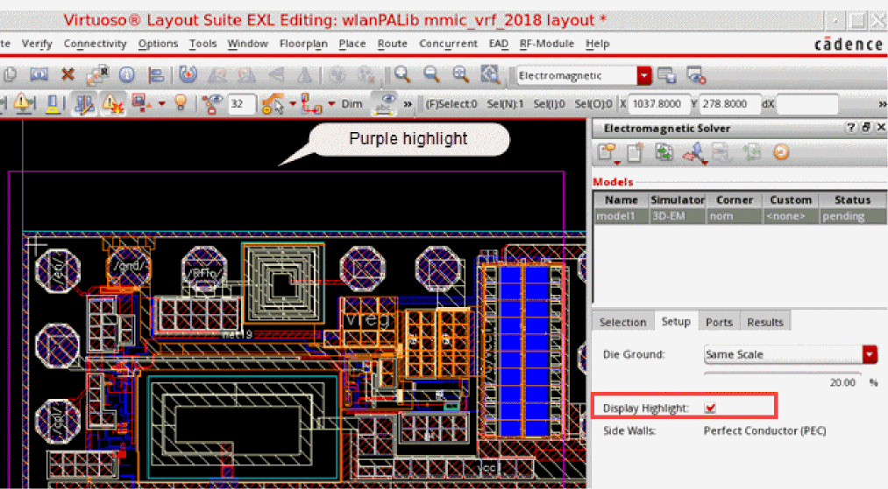

Specifying Die Ground Settings for an IC Layout
The die ground setting defines the size of the metal shape that is created at the bottom of the substrate. This also establishes the X and Y extents of the 3D box that will be used for the simulation region by Clarity 3D Solver.
-
On the Setup tab, specify the scale type and scale percentage in the Die Ground field.
You can specify the scale type either as a percentage of the width or height of the model or as an absolute dimension in micron. This scale factor is applied around the bounding box of the model, which is the bounding box of all selected nets and instances, optionally trimmed by a cutting boundary. -
Select the Display Highlight check box.
This displays a flashing purple square on the layout canvas to represent the X and Y extents of the box to be used as the simulation region, as shown in the figure of an IC layout shown below.
The Side Walls setting on the Setup tab is dependent on the Current Return Path setting on the Selection tab.
Related Topics
Selecting Objects from an IC Layout
Return to top